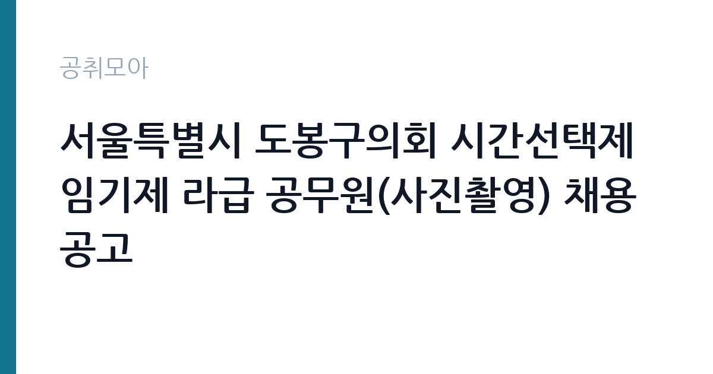

[지자체] 서울특별시 도봉구의회 시간선택제임기제 라급 공무원(사진촬영) 채용 공고
서울특별시 도봉구 의회사무국 · 서울 · 마감 2026-10-16 (D-15) · 출처 나라일터

한눈에 보는 모집 조건
| 기관 | 서울특별시 도봉구 의회사무국 |
|---|---|
| 공고명 | 서울특별시 도봉구의회 시간선택제임기제 라급 공무원(사진촬영) 채용 공고 |
| 고용형태 | 임기제 |
| 근무지 | 서울 |
| 게시일 | 2026-10-02 |
| 마감일 | 2026-10-16 (D-15) |
지원자격, 이렇게 읽으세요
- 시간선택제임기제 라급 1명
- 접수 ~2026-10-16 마감
- 세부 조건은 원문 공고문 확인
모집 분야는 사진촬영이며 선발 직급은 시간선택제임기제 라급입니다. 사진이나 영상 관련 경력과 자격증, 포트폴리오 보유 여부가 심사에서 중요하게 작용할 것으로 보입니다. 세부 자격요건은 공고문을 참조해야 하며, 학위나 경력 기준 같은 조건은 원문 공고문에서 확인하셨습니다. 임기제 공무원은 근무 기간이 정해져 있는 별도 정원이라 일반직과 신분이 다르다는 점을 이해하고 지원하셨습니다. 거주지 제한이나 우대 조건이 있는지도 원문에서 확인하시기 바랍니다.
이 공고의 포인트
이 공고의 포인트는 세 가지입니다. 첫째, 직무가 명확합니다. 의정활동 촬영이라는 단일 분야라 본인의 촬영 경력을 그대로 보여주면 됩니다. 둘째, 서울 지역 의회 근무입니다. 도봉구의회 의회사무국 소속으로 근무지는 서울이며 출퇴근 여건이 좋습니다. 셋째, 시간선택제라 시간 활용이 가능합니다. 전일제보다 근무시간이 짧아 촬영 외주나 개인 작업을 병행하려는 분께 맞을 수 있습니다. 다만 보수도 근무시간에 비례하므로 이 점은 pay 항목에서 확인하셨습니다.
전형은 어떻게 진행되나
전형은 접수 후 서류 심사와 면접으로 진행될 것으로 보이며, 사진 분야 특성상 포트폴리오 심사가 포함될 수 있습니다. 정확한 전형 단계와 제출 서류 목록은 원문 공고문에서 확인하셔야 합니다. 응시 방법은 방문 접수 또는 등기우편 접수이며, 우편 접수 시 마감일 도착분 인정인지 발송 소인 기준인지가 중요합니다. 사진촬영 직무는 실물 결과물이 말해주므로, 포트폴리오에 행사 촬영과 인물 촬영, 보도용 사진 등 공공기관 성격에 맞는 작업을 앞쪽에 배치하셨습니다.
원문에서 확인한 전형 방식
○ 모집분야 : 사진촬영 등 ○ 선발직급 : 시간선택제임기제 라급 ○ 고용형태 : 임기제 ○ 자격요건 : 공고문 참조 ○ 접수기간 : 2026년10월13일 ~ 2026년10월16일 ○ 응시방법 : 방문 또는 등기우편 접수 ○ 문 의 처 : 02-2091-4722
이런 분께 추천해요
- 행사나 보도, 공공기관 홍보 촬영 경력이 있으신 분
- 사진 관련 학과 졸업자나 관련 자격증을 보유하신 분
- 시간선택제 근무로 촬영 일정을 병행하고 싶으신 분
지원 전 체크리스트
- 사진촬영 분야 세부 자격요건을 원문 공고문에서 확인하셨습니다
- 포트폴리오와 경력증명서 등 제출 서류를 준비하셨습니다
- 방문 접수와 등기우편 중 접수 방법을 정하셨습니다
- 접수 기간 10월 13일부터 10월 16일을 달력에 표시하셨습니다
모집 일정과 제출 타이밍
접수 기간은 2026년 10월 13일부터 10월 16일까지 나흘뿐이라 일정이 촉박합니다. 등기우편으로 접수하시면 배송 기간을 감안해 최소 이틀 이상 여유를 두고 발송하셔야 합니다. 방문 접수가 가능하시다면 마감일 혼잡을 피해 접수 초반에 다녀오시는 것이 안전합니다. 접수 마감 이후에는 서류 심사와 면접 일정이 이어지므로 연락 가능한 번호를 정확히 기재하셨습니다.
직무 이해하기: 지자체
구의회 사진촬영 담당자는 본회의와 상임위원회, 행정사무감사, 의원 현장방문 등 의정활동 전반을 촬영합니다. 촬영한 사진은 보도자료와 의회 홈페이지, 소식지, SNS 홍보물에 사용됩니다. 단순 촬영을 넘어 사진 선별과 보정, 파일 아카이브 관리까지 맡는 경우가 많습니다. 의회 일정은 회기 중에는 빡빡하게 몰리므로, 일정 변경에 유연하게 대응하고 납품 기한을 지키는 것이 중요합니다. 의전 행사 특성상 복장과 촬영 매너 같은 기본기도 평가 요소가 됩니다.
자기소개서 작성 팁
자기소개서는 촬영 경력 중심으로 쓰셨습니다. 어떤 행사를 몇 회 촬영했고, 촬영물이 어디에 사용됐는지를 숫자와 함께 적으시면 설득력이 높아집니다. 공공기관이나 언론사 납품 경험이 있으시다면 앞에 배치하셨습니다. 사용 가능한 장비와 후보정 프로그램 능력을 구체적으로 적으시고, 야외 행사와 실내 회의 같은 다양한 환경 촬영 경험을 언급하셨습니다. 의회 홍보라는 직무 목적에 맞춰 기록 사진의 공공성과 중립성을 이해하고 있다는 점도 한 줄 넣어주셨습니다.
면접 준비 포인트
면접에서는 장비 운용 능력과 현장 대응력을 묻습니다. 본회의장처럼 플래시 사용이 제한되는 환경에서 어떻게 대응하는지, 일정이 겹치는 행사 촬영 요청이 들어오면 무엇을 우선하는지를 묻는 질문이 나올 수 있습니다. 포트폴리오 속 대표작 두세 점의 촬영 의도와 상황을 설명할 준비를 하셨습니다. 시간선택제 근무 조건에 대한 이해와 임기제 신분에 대한 수용 의사도 확인될 수 있으니 솔직하게 답변하셨습니다.
급여·근무조건 읽는 법
보수는 지방공무원 보수규정에 따른 시간선택제임기제 라급 연봉이 적용되며, 근무시간에 비례해 지급됩니다. 참고로 타 지자체 공고 사례에서는 주 35시간 근무 기준 연 3,744만 9천원 수준으로 책정된 바 있습니다(지자체 시간선택제임기제 공고 사례 기준). 도봉구의회 이번 채용의 실제 근무시간과 연봉액은 원문 공고문에서 확인하셔야 하며, 경력에 따라 연봉 책정이 달라질 수 있습니다. 수당과 4대 보험 적용 여부도 공고문과 담당 부서(02-2091-4722)를 통해 확인하시기 바랍니다.
자주 묻는 질문
- 시간선택제임기제란 무엇인가요
근무시간을 전일제보다 짧게 정해 근무하는 임기제 공무원을 말합니다. 보수는 근무시간에 비례해 지급되며, 임기가 정해져 있어 기간이 끝나면 당연퇴직합니다. 일반직과 달리 별도 정원으로 운영되므로 이 점을 이해하고 지원하셨습니다. - 포트폴리오는 꼭 필요한가요
사진촬영 직무는 실무 능력을 결과물로 증명해야 하므로 포트폴리오가 사실상 필수입니다. 행사 촬영과 인물 촬영, 보도용 사진 등 공공기관 성격에 맞는 작업을 중심으로 구성하시기 바랍니다. - 등기우편 접수 시 주의할 점은 무엇인가요
마감일 도착분 인정인지 발송 소인 기준인지가 가장 중요합니다. 배송 지연에 대비해 여유 있게 발송하시고, 등기 영수증을 보관하셨습니다. 세부 기준은 원문 공고문에서 확인하시기 바랍니다.
함께 보면 좋은 공고
[지자체] 서울특별시 도봉구의회 일반임기제공무원(7급 정책지원관) 채용공고 — 마감 2026-10-14[지자체] 울산광역시 울주군 보건소장(개방형직위) 채용 공고 — 마감 2026-10-16[지자체] 2026년 제3회 예산군 지방임기제공무원 임용시험 시행계획 공고(보건관리자, 환경오염 지도단속, 학예연구사, 치매안심센터 운영 인력, 한시임기제) — 마감 2026-10-14출처: 나라일터 공개정보를 바탕으로 공취모아가 정리한 안내글입니다. 모집 조건·일정은 변경될 수 있으니 지원 전 반드시 원문 공고문을 확인하세요. 본 글은 정보 제공용이며 합격을 보장하지 않습니다.